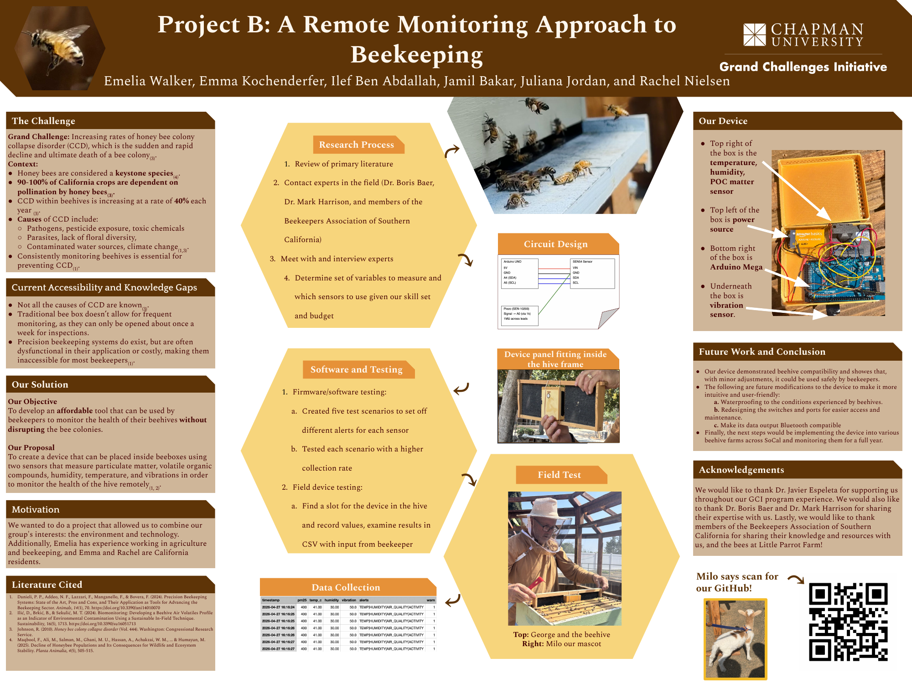

My team and I won the Arthur C. Flint Science Award at the Grand Challenges Initiative Showcase for this project: a remote monitoring approach to beekeeping aimed at early detection of Colony Collapse Disorder (CCD) in bee colonies.
We built an Arduino Mega–based device that fits inside a standard beehive and, using two different sensors, collects data on vibrations, temperature, humidity, particulate matter, and VOCs — so beekeepers can catch changes in the hive without disrupting the colony. Honey bees are a keystone species (90–100% of California crops depend on them), and CCD is rising roughly 40% each year, so affordable and non-intrusive monitoring really matters.
Built with Emelia Walker, Ilef Ben Abdallah, Jamil Bakar, Juliana Jordan, and Rachel Nielsen. Special thanks to our faculty mentors and Little Parrot Farm for supporting our field testing.
